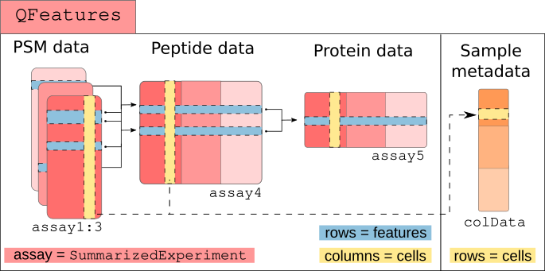
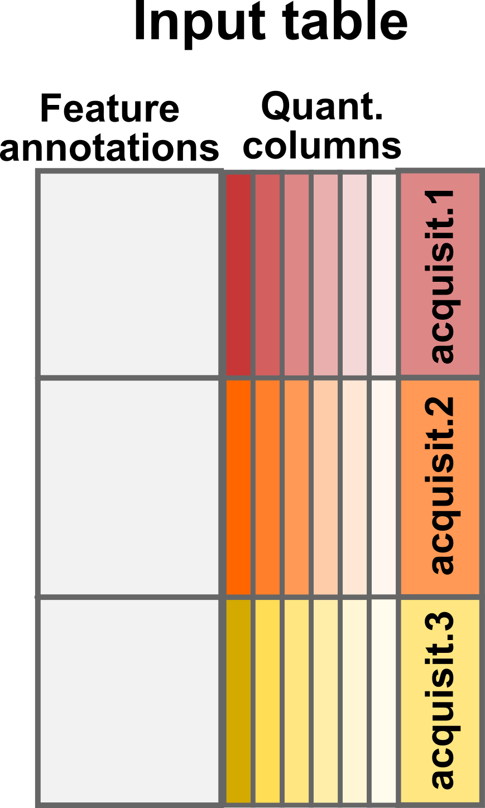
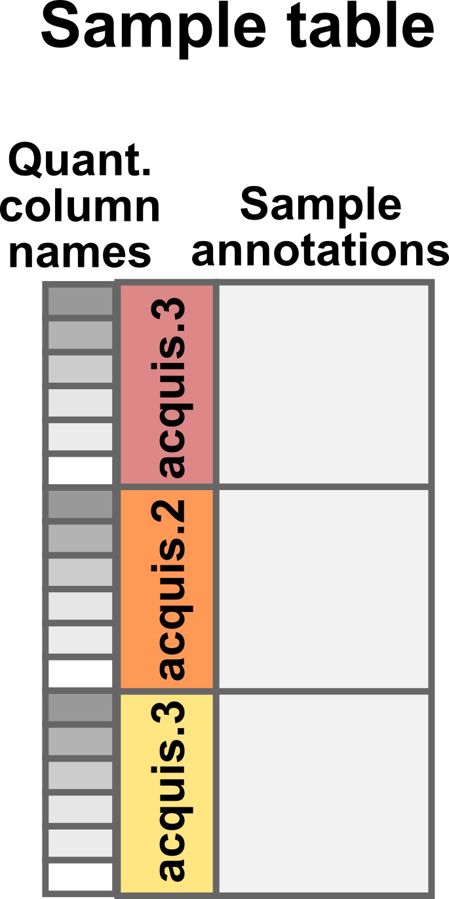
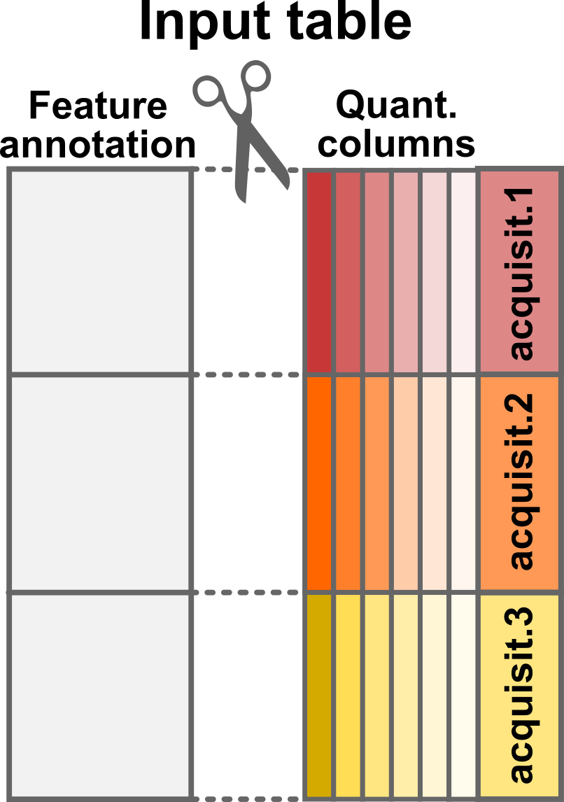
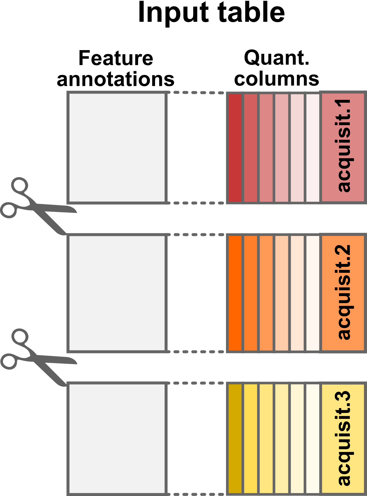
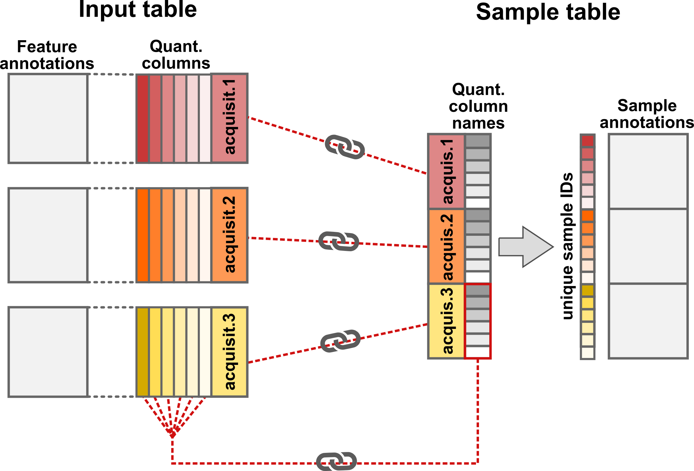
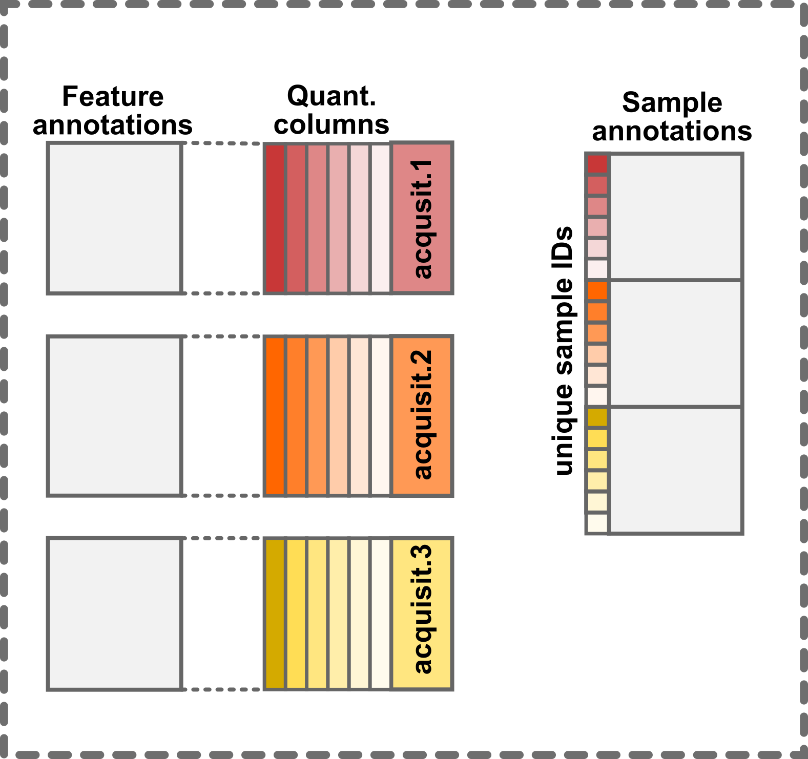

Load Single-Cell Proteomics data using `readSCP`
Laurent Gatto
Christophe Vanderaa
10 November 2026
Source:vignettes/read_scp.Rmd
read_scp.RmdThe scp data framework
Our data structure is relying on three curated data classes:
QFeatures (Gatto and Vanderaa
(2023)),SummarizedExperiment and
SingleCellExperiment (Amezquita et
al. (2020)). QFeatures is dedicated to the
manipulation and processing of MS-based quantitative data. It explicitly
records the successive steps to allow users to navigate up and down the
different MS levels. SummarizedExperiment is a class
designed to store and manipulate quantitative data. Its the base
building block of a QFeatures object. SingleCellExperiment
is another class designed as an efficient data container that serves as
an interface to state-of-the-art methods and algorithms for single-cell
data. This class is used in the context of data modeling
(scplainer).
Our framework combines the three classes to inherit from their respective advantages.
Because mass spectrometry (MS)-based single-cell proteomics (SCP)
only captures the proteome of between one and a few tens of single-cells
in a single run, the data is usually acquired across many MS batches.
Therefore, the data for each run should conceptually be stored in its
own container, that we here call a set. The expected input for
working with the scp package is quantification data of
peptide to spectrum matches (PSM). These data can then be processed to
reconstruct peptide and protein data. The links between related features
across different sets are stored to facilitate manipulation and
visualization of of PSM, peptide and protein data. This is conceptually
shown below.

The scp framework relies on
SingleCellExperiment and QFeatures objects
The main input table required for starting an analysis with
scp is called the assayData.
assayData table
The assayData table is generated after the
identification and quantification of the MS spectra by a pre-processing
software such as MaxQuant, ProteomeDiscoverer or MSFragger (the list
of available software is actually much longer). We will here use as an
example a data table that has been generated by MaxQuant. The table is
available from the scp package and is called
mqScpData (for MaxQuant generated SCP data).
In this toy example, there are 1361 rows corresponding to features (quantified PSMs) and 149 columns corresponding to different data fields recorded by MaxQuant during the processing of the MS spectra. There are three types of columns:
- Quantification columns (
quantCols): 1 to n (depending on technology) - Run identifier column (
runCol): e.g. file name - Feature annotations: e.g. peptide sequence, ion charge, protein name

Conceptual representation of the assayData input table
Quantification columns (quantCols)
The quantification data can be composed of one (in case of label-free
acquisition) or multiple columns (in case of multiplexing). In the
example data set, the columns holding the quantification, the
quantCols, start with Reporter.intensity.
followed by a number.
(quantCols <- grep("Reporter.intensity.\\d", colnames(mqScpData),
value = TRUE))
#> [1] "Reporter.intensity.1" "Reporter.intensity.2" "Reporter.intensity.3"
#> [4] "Reporter.intensity.4" "Reporter.intensity.5" "Reporter.intensity.6"
#> [7] "Reporter.intensity.7" "Reporter.intensity.8" "Reporter.intensity.9"
#> [10] "Reporter.intensity.10" "Reporter.intensity.11" "Reporter.intensity.12"
#> [13] "Reporter.intensity.13" "Reporter.intensity.14" "Reporter.intensity.15"
#> [16] "Reporter.intensity.16"As you may notice, the example data was acquired using a TMT-16 protocol since we retrieve 16 quantification columns. Actually, some runs were acquired using a TMT-11 protocol (11 labels) but we will come back to this later.
head(mqScpData[, quantCols])
#> Reporter.intensity.1 Reporter.intensity.2 Reporter.intensity.3
#> 1 61251 501.71 3731.3
#> 2 58648 1099.80 2837.7
#> 3 150350 3705.00 9361.0
#> 4 27347 405.90 1525.2
#> 5 84035 583.09 4092.3
#> 6 44895 700.23 2283.0
#> Reporter.intensity.4 Reporter.intensity.5 Reporter.intensity.6
#> 1 1643.30 871.84 981.87
#> 2 494.32 349.26 1030.50
#> 3 0.00 1945.40 1188.60
#> 4 0.00 0.00 318.74
#> 5 530.13 718.13 2204.50
#> 6 1109.60 0.00 675.79
#> Reporter.intensity.7 Reporter.intensity.8 Reporter.intensity.9
#> 1 1200.10 939.06 1457.50
#> 2 0.00 1214.10 800.58
#> 3 1574.00 2302.10 2176.10
#> 4 0.00 519.81 0.00
#> 5 960.51 453.77 1188.40
#> 6 0.00 809.38 668.88
#> Reporter.intensity.10 Reporter.intensity.11 Reporter.intensity.12
#> 1 1329.80 981.83 NA
#> 2 807.79 391.38 NA
#> 3 1399.50 1307.50 2192.4
#> 4 507.23 370.79 NA
#> 5 740.99 0.00 NA
#> 6 1467.50 901.38 NA
#> Reporter.intensity.13 Reporter.intensity.14 Reporter.intensity.15
#> 1 NA NA NA
#> 2 NA NA NA
#> 3 1791.4 1727.5 2157.3
#> 4 NA NA NA
#> 5 NA NA NA
#> 6 NA NA NA
#> Reporter.intensity.16
#> 1 NA
#> 2 NA
#> 3 1398
#> 4 NA
#> 5 NA
#> 6 NARun identifier column (runCol)
This column provides the identifier of the MS runs in which each PSM was acquired. MaxQuant uses the raw file name to identify the run.
unique(mqScpData$Raw.file)
#> [1] "190321S_LCA10_X_FP97AG" "190222S_LCA9_X_FP94BM"
#> [3] "190914S_LCB3_X_16plex_Set_21" "190321S_LCA10_X_FP97_blank_01"Feature annotations
The remaining columns in the mqScpData table contain
information used or generated during the identification of the MS
spectra. For instance, you may find the charge of the parent ion, the
score and probability of a correct match between the MS spectrum and a
peptide sequence, the sequence of the best matching peptide, its length,
its modifications, the retention time of the peptide on the LC, the
protein(s) the peptide originates from and much more.
head(mqScpData[, c("Charge", "Score", "PEP", "Sequence", "Length",
"Retention.time", "Proteins")])
#> Charge Score PEP Sequence Length Retention.time
#> 1 2 41.029 5.2636e-04 ATNFLAHEK 9 65.781
#> 2 2 44.349 5.8789e-04 ATNFLAHEK 9 63.787
#> 3 2 51.066 4.0315e-24 SHTILLVQPTK 11 71.884
#> 4 2 63.816 4.7622e-06 SHTILLVQPTK 11 68.633
#> 5 2 74.464 6.8709e-09 SHTILLVQPTK 11 71.946
#> 6 2 41.502 5.3705e-02 SLVIPEK 7 76.204
#> Proteins
#> 1 sp|P29692|EF1D_HUMAN
#> 2 sp|P29692|EF1D_HUMAN
#> 3 sp|P84090|ERH_HUMAN
#> 4 sp|P84090|ERH_HUMAN
#> 5 sp|P84090|ERH_HUMAN
#> 6 sp|P62269|RS18_HUMAN
colData table
The colData table contains the experimental design
generated by the researcher. The rows of the sample table correspond to
a sample in the experiment and the columns correspond to the available
annotations about the sample. We will here use the second example
table:
data("sampleAnnotation")
head(sampleAnnotation)
#> runCol quantCols SampleType lcbatch sortday digest
#> 1 190222S_LCA9_X_FP94BM Reporter.intensity.1 Carrier LCA9 s8 N
#> 2 190222S_LCA9_X_FP94BM Reporter.intensity.2 Reference LCA9 s8 N
#> 3 190222S_LCA9_X_FP94BM Reporter.intensity.3 Unused LCA9 s8 N
#> 4 190222S_LCA9_X_FP94BM Reporter.intensity.4 Monocyte LCA9 s8 N
#> 5 190222S_LCA9_X_FP94BM Reporter.intensity.5 Blank LCA9 s8 N
#> 6 190222S_LCA9_X_FP94BM Reporter.intensity.6 Monocyte LCA9 s8 NThe colData table may contain any information about the
samples. For example, useful information could be the type of sample
that is analysed, a phenotype known from the experimental design, the MS
batch, the acquisition date, MS settings used to acquire the sample, the
LC batch, the sample preparation batch, etc… However, scp
requires 2 specific columns in the colData
table:
-
runCol: this column provides the MS run names (that match theRaw.filecolumn in theassayDatatable). -
quantCols: this column tellsscpthe names of the columns in the feature data holds the quantification of the corresponding sample.
These two columns allow scp to correctly split and match
data that were acquired across multiple acquisition runs.

Conceptual representation of the sample table
readSCP()
readSCP is the function that converts the
assayData and the colData into a
QFeatures object following the data structure described
above, that is storing the data belonging to each MS batch in a separate
SingleCellExperiment object.
Sample names
readSCP() automatically assigns names that are unique
across all samples in all sets. This is performed by appending the name
of the MS run where a given sample is found with the name of the
quantification column for that sample. Suppose a sample belongs to batch
190222S_LCA9_X_FP94BM and the quantification values in the
assayData table are found in the column called
Reporter.intensity.3, then the sample name will become
190222S_LCA9_X_FP94BM_Reporter.intensity.3.
Special case: empty samples
In some rare cases, it can be beneficial to remove empty samples (all
quantifications are NA) from the sets. Such samples can
occur when samples that were acquired with different multiplexing labels
are merged in a single table. For instance, the SCoPE2 data we provide
as an example contains runs that were acquired with two TMT protocols.
The 3 first sets were acquired using the TMT-11 protocol and the last
set was acquired using a TMT-16 protocol. The missing label channels in
the TMT-11 data are filled with NAs. When setting
removeEmptyCols = TRUE, readSCP()
automatically detects and removes columns containing only
NAs,
Running readSCP
We convert the sample and the feature data into a
QFeatures object in a single command thanks to
readSCP.
(scp <- readSCP(assayData = mqScpData,
colData = sampleAnnotation,
runCol = "Raw.file",
removeEmptyCols = TRUE))
#> Checking arguments.
#> Loading data as a 'SummarizedExperiment' object.
#> Splitting data in runs.
#> | | | 0% | |================== | 25% | |=================================== | 50% | |==================================================== | 75% | |======================================================================| 100%
#> Formatting sample annotations (colData).
#> Formatting data as a 'QFeatures' object.
#> An instance of class QFeatures (type: scp) with 4 sets:
#>
#> [1] 190222S_LCA9_X_FP94BM: SummarizedExperiment with 395 rows and 11 columns
#> [2] 190321S_LCA10_X_FP97_blank_01: SummarizedExperiment with 109 rows and 11 columns
#> [3] 190321S_LCA10_X_FP97AG: SummarizedExperiment with 487 rows and 11 columns
#> [4] 190914S_LCB3_X_16plex_Set_21: SummarizedExperiment with 370 rows and 16 columnsThe object returned by readSCP() is a
QFeatures object containing 4
SingleCellExperiment sets that have been named after the 4
MS batches. Each set contains either 11 or 16 columns (samples)
depending on the TMT labelling strategy and a variable number of rows
(quantified PSMs). Each piece of information can easily be retrieved
thanks to the QFeatures architectures. As mentioned in
another vignette,
the colData is retrieved using its dedicated function:
head(colData(scp))
#> DataFrame with 6 rows and 6 columns
#> runCol quantCols
#> <character> <character>
#> 190222S_LCA9_X_FP94BM_Reporter.intensity.1 190222S_LC... Reporter.i...
#> 190222S_LCA9_X_FP94BM_Reporter.intensity.2 190222S_LC... Reporter.i...
#> 190222S_LCA9_X_FP94BM_Reporter.intensity.3 190222S_LC... Reporter.i...
#> 190222S_LCA9_X_FP94BM_Reporter.intensity.4 190222S_LC... Reporter.i...
#> 190222S_LCA9_X_FP94BM_Reporter.intensity.5 190222S_LC... Reporter.i...
#> 190222S_LCA9_X_FP94BM_Reporter.intensity.6 190222S_LC... Reporter.i...
#> SampleType lcbatch sortday
#> <character> <character> <character>
#> 190222S_LCA9_X_FP94BM_Reporter.intensity.1 Carrier LCA9 s8
#> 190222S_LCA9_X_FP94BM_Reporter.intensity.2 Reference LCA9 s8
#> 190222S_LCA9_X_FP94BM_Reporter.intensity.3 Unused LCA9 s8
#> 190222S_LCA9_X_FP94BM_Reporter.intensity.4 Monocyte LCA9 s8
#> 190222S_LCA9_X_FP94BM_Reporter.intensity.5 Blank LCA9 s8
#> 190222S_LCA9_X_FP94BM_Reporter.intensity.6 Monocyte LCA9 s8
#> digest
#> <character>
#> 190222S_LCA9_X_FP94BM_Reporter.intensity.1 N
#> 190222S_LCA9_X_FP94BM_Reporter.intensity.2 N
#> 190222S_LCA9_X_FP94BM_Reporter.intensity.3 N
#> 190222S_LCA9_X_FP94BM_Reporter.intensity.4 N
#> 190222S_LCA9_X_FP94BM_Reporter.intensity.5 N
#> 190222S_LCA9_X_FP94BM_Reporter.intensity.6 NThe feature annotations are retrieved from the rowData.
Since the feature annotations are specific to each set, we need to tell
from which set we want to get the rowData:
head(rowData(scp[["190222S_LCA9_X_FP94BM"]]))[, 1:5]
#> DataFrame with 6 rows and 5 columns
#> uid Sequence Length Modifications Modified.sequence
#> <character> <character> <integer> <character> <character>
#> 2 _(Acetyl (... ATNFLAHEK 9 Acetyl (Pr... _(Acetyl (...
#> 4 _(Acetyl (... SHTILLVQPT... 11 Acetyl (Pr... _(Acetyl (...
#> 6 _(Acetyl (... SLVIPEK 7 Acetyl (Pr... _(Acetyl (...
#> 9 _AAGLALK_ ... AAGLALK 7 Unmodified _AAGLALK_
#> 12 _AALSAGK_ ... AALSAGK 7 Unmodified _AALSAGK_
#> 15 _AAPEASGTP... AAPEASGTPS... 16 Unmodified _AAPEASGTP...Finally, we can also retrieve the quantification matrix for a set of interest:
head(assay(scp, "190222S_LCA9_X_FP94BM"))
#> 190222S_LCA9_X_FP94BM_Reporter.intensity.1
#> 2 58648.0
#> 4 27347.0
#> 6 44895.0
#> 9 122070.0
#> 12 58605.0
#> 15 5006.5
#> 190222S_LCA9_X_FP94BM_Reporter.intensity.2
#> 2 1099.80
#> 4 405.90
#> 6 700.23
#> 9 1153.50
#> 12 895.25
#> 15 517.86
#> 190222S_LCA9_X_FP94BM_Reporter.intensity.3
#> 2 2837.70
#> 4 1525.20
#> 6 2283.00
#> 9 7361.90
#> 12 2763.80
#> 15 446.19
#> 190222S_LCA9_X_FP94BM_Reporter.intensity.4
#> 2 494.32
#> 4 0.00
#> 6 1109.60
#> 9 1732.30
#> 12 867.82
#> 15 458.17
#> 190222S_LCA9_X_FP94BM_Reporter.intensity.5
#> 2 349.26
#> 4 0.00
#> 6 0.00
#> 9 1515.60
#> 12 1050.30
#> 15 467.90
#> 190222S_LCA9_X_FP94BM_Reporter.intensity.6
#> 2 1030.50
#> 4 318.74
#> 6 675.79
#> 9 2252.00
#> 12 1268.70
#> 15 649.50
#> 190222S_LCA9_X_FP94BM_Reporter.intensity.7
#> 2 0.00
#> 4 0.00
#> 6 0.00
#> 9 444.48
#> 12 532.30
#> 15 259.84
#> 190222S_LCA9_X_FP94BM_Reporter.intensity.8
#> 2 1214.10
#> 4 519.81
#> 6 809.38
#> 9 2343.80
#> 12 1073.10
#> 15 533.55
#> 190222S_LCA9_X_FP94BM_Reporter.intensity.9
#> 2 800.58
#> 4 0.00
#> 6 668.88
#> 9 3100.20
#> 12 911.30
#> 15 393.53
#> 190222S_LCA9_X_FP94BM_Reporter.intensity.10
#> 2 807.79
#> 4 507.23
#> 6 1467.50
#> 9 1825.20
#> 12 1300.00
#> 15 463.26
#> 190222S_LCA9_X_FP94BM_Reporter.intensity.11
#> 2 391.38
#> 4 370.79
#> 6 901.38
#> 9 2372.50
#> 12 1185.90
#> 15 353.04Under the hood
readSCP proceeds as follows:
- The
assayDatatable must be provided as adata.frame.readSCP()converts the table to aSingleCellExperimentobject but it needs to know which column(s) store the quantitative data. Those column name(s) is/are provided by thequantColsfield in the annotation table (colDataargument).

Step1: Convert the input table to a SingleCellExperiment
object
- The
SingleCellExperimentobject is then split according to the acquisition run. The split is performed depending on therunColfield inassayData. It is also indicated in therunColargument. In this case, the data will be split according to theRaw.filecolumn inmqScpData.Raw.filecontains the names of the acquisition runs that was used by MaxQuant to retrieve the raw data files.

Step2: Split by acquisition run
- The sample annotations is generated from the supplied sample table
(
colDataargument). Note that in order forreadSCP()to correctly match the feature data with the annotations,colDatamust contain arunColcolumn with run names and aquantColscolumn with the names of the quantitative columns inassayData.

Step3: Adding and matching the sample annotations
- Finally, the
SingleCellExperimentsets and thecolDataare converted to aQFeaturesobject.

Step4: Converting to a QFeatures
What about label-free SCP?
The scp package is meant for both label-free and
multiplexed SCP data. Like in the example above, the label-free data
should contain the batch names in both the feature data and the sample
data. The sample data must also contain a column that points to the
columns of the feature data that contains the quantifications. Since
label-free SCP acquires one single-cell per run, this sample data column
should point the same column for all samples. Moreover, this means that
each PSM set will contain a single column.
What about other input formats?
readSCP() should work with any PSM quantification table
that is output by a pre-processing software. For instance, you can
easily import the PSM tables generated by ProteomeDiscoverer. The batch
names are contained in the File ID column (that should be
supplied as the batchCol argument to
readSCP()). The quantification columns are contained in the
columns starting with Abundance, eventually followed by a
multiplexing tag name. These columns should be stored in a dedicated
column of the sample data to be supplied as runCol to
readSCP().
If your input cannot be loaded using the procedure described in this vignette, you can submit a feature request (see next section).
The readSCPfromDIANN() function is adapted to import
label-free and plexDIA/mTRAQ Report.tsv files generated by
DIA-NN.
For more information, see the readQFeatures() and
readQFeaturesFromDIANN() manual pages, that described the
main principle that concern the data import and formatting.
Need help?
You can open an issue on the GitHub
repository in case of troubles when loading your SCP data with
readSCP(). Any suggestion or feature request about the
function or the documentation are also warmly welcome.
Session information
R version 4.6.1 (2026-06-24)
Platform: x86_64-pc-linux-gnu
Running under: Ubuntu 24.04.5 LTS
Matrix products: default
BLAS: /usr/lib/x86_64-linux-gnu/openblas-pthread/libblas.so.3
LAPACK: /usr/lib/x86_64-linux-gnu/openblas-pthread/libopenblasp-r0.3.26.so; LAPACK version 3.12.0
locale:
[1] LC_CTYPE=en_US.UTF-8 LC_NUMERIC=C
[3] LC_TIME=en_US.UTF-8 LC_COLLATE=en_US.UTF-8
[5] LC_MONETARY=en_US.UTF-8 LC_MESSAGES=en_US.UTF-8
[7] LC_PAPER=en_US.UTF-8 LC_NAME=C
[9] LC_ADDRESS=C LC_TELEPHONE=C
[11] LC_MEASUREMENT=en_US.UTF-8 LC_IDENTIFICATION=C
time zone: UTC
tzcode source: system (glibc)
attached base packages:
[1] stats4 stats graphics grDevices utils datasets methods
[8] base
other attached packages:
[1] scp_1.23.3 QFeatures_1.23.2
[3] MultiAssayExperiment_1.39.1 SummarizedExperiment_1.43.0
[5] Biobase_2.73.2 GenomicRanges_1.65.4
[7] Seqinfo_1.3.2 IRanges_2.47.5
[9] S4Vectors_0.51.10 BiocGenerics_0.59.12
[11] generics_0.1.4 MatrixGenerics_1.25.0
[13] matrixStats_1.5.0 BiocStyle_2.41.0
loaded via a namespace (and not attached):
[1] gtable_0.3.6 ggplot2_4.0.3
[3] xfun_0.62 bslib_0.12.0
[5] htmlwidgets_1.6.4 ggrepel_0.9.8
[7] lattice_0.23-1 vctrs_0.7.3
[9] tools_4.6.1 tibble_3.3.1
[11] cluster_2.1.8.3 nipals_1.2
[13] pkgconfig_2.0.3 Matrix_1.7-6
[15] RColorBrewer_1.1-3 IHW_1.41.0
[17] S7_0.2.2 desc_1.4.3
[19] lpsymphony_1.41.0 lifecycle_1.0.5
[21] farver_2.1.2 compiler_4.6.1
[23] stringr_1.6.0 textshaping_1.0.5
[25] clue_0.3-68 htmltools_0.5.9
[27] sass_0.4.10 fdrtool_1.2.18
[29] yaml_2.3.12 lazyeval_0.2.3
[31] pkgdown_2.2.1.9000 pillar_1.11.1
[33] jquerylib_0.1.4 tidyr_1.3.2
[35] MASS_7.3-66 SingleCellExperiment_1.35.2
[37] DelayedArray_0.39.8 cachem_1.1.0
[39] abind_1.4-8 metapod_1.21.0
[41] tidyselect_1.2.1 digest_0.6.39
[43] slam_0.1-56 stringi_1.8.9
[45] purrr_1.2.2 dplyr_1.2.1
[47] reshape2_1.4.5 bookdown_0.48
[49] fastmap_1.2.0 grid_4.6.1
[51] cli_3.6.6 SparseArray_1.13.4
[53] magrittr_2.0.5 S4Arrays_1.13.2
[55] scales_1.4.0 rmarkdown_2.32
[57] XVector_0.53.0 igraph_2.3.4
[59] otel_0.2.0 ragg_1.5.2
[61] evaluate_1.0.5 knitr_1.52
[63] rlang_1.3.0 Rcpp_1.1.2
[65] glue_1.8.1 BiocManager_1.30.27
[67] jsonlite_2.0.0 AnnotationFilter_1.37.0
[69] R6_2.6.1 plyr_1.8.9
[71] systemfonts_1.3.2 fs_2.1.0
[73] ProtGenerics_1.45.0 MsCoreUtils_1.25.4 License
This vignette is distributed under a CC BY-SA license license.